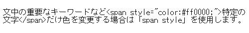
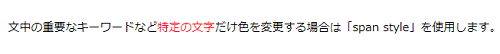

span styleで文字色と背景色の指定方法
「div style」は、そのブロック要素全体の色彩や背景色を指定する際に使いますが、文中の重要なキーワードなど特定の文字だけ色を変更する場合は「span style」を使用します。
この「div style」と「span style」の違いについてですが、「div style」はブロック要素のため、その前後で改行が入ることになり、文中の特定の文字だけという使い方はできません。
一方、「span style」はインライン要素のため、文中の特定のキーワードにだけ色を指定する際に便利です。
ちなみに、このスタイル属性についてはこちらのページをご参照ください。
HTMLタグにstyle属性の指定方法
また、ブロック要素の「divタグ」については、こちらを参照ください。
<div>タグはブロック分けのhtml
■文字色の指定方法
この「span style」で文字の色彩を変える場合は、キーワードの前後に次のタグを挿入します。
<span style="color:#ff0000;">キーワード</span>
この例では赤の「#ff0000」を指定していますが、ここに変更したい色彩を記述します。
例えば、このようにspanタグを記述したとします。

すると、「span style」で囲まれた前後で改行されることなくこのように表示されます。

■太字にする方法
さらに、太字にする場合は「font-weight:bold;」も追加するとよいでしょう。
<span style="color:#ff0000;font-weight:bold;">キーワード</span>
■文字の背景色の指定方法
文字の色ではなく、文字の背景色を変える場合には「background-color」で指定します。キーワードの前後に次のタグを入れます。
<span style="background-color:#FFCACA;"></span>
そうすると、タグの範囲の背景色だけを指定することができます。
■スタイルシートでの指定方法
上記の方法はHTML内でスタイルを直接指定する方法になりますが、色彩や背景色などはスタイルシート側であらかじめ設定しておくと便利です。
例えば、<span class="abc">などと指定して、「abc」のclass属性で指定した「span」の表示内容をスタイルシートで指定することができます。
<span class="abc"></span>
.abc {
color:ff0000;
background-color:#FFCACA;
}
これをスタイルシートを使わず、HTML上に直接記述する上記の「span style」と同じ意味になります。
<span style="color:ff0000;background-color:#FFCACA;"></span>
ただ、このようにHTMLに直接記述すると長く煩雑になってしまうため、できるだけスタイルシートを使って外部化した方がHTMLがスッキリします。